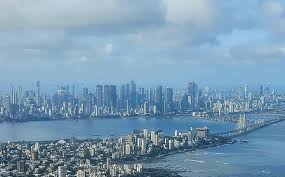
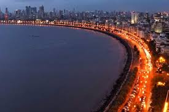
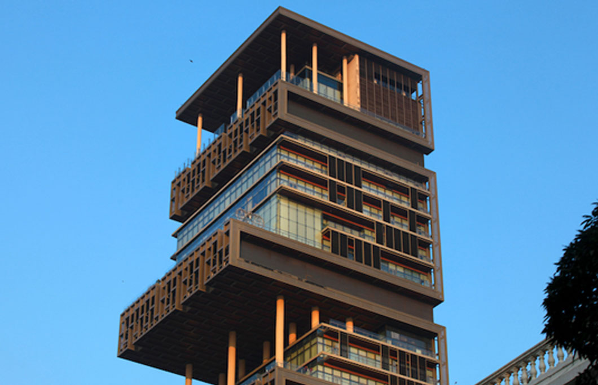

Unlike other cities, Mumbai is made up of seven islands that were united to make the city a whole. These islands include Colaba, Mahim, Parel, Worli, Isle of Bombay, Little Colaba, and Mazagaon.
Mumbai's cultural life reflects its ethnically diverse population. The city has a number of museums, libraries, literary organizations, art galleries, theaters, and other cultural institutions.

Mumbai lies on the Konkan coast on the west coast of India and has a deep natural harbour. In 2008, Mumbai was named an alpha world city. It is also the wealthiest city in India, and has the highest number of millionaires and billionaires among all cities in India.
Mumbai,A Dream city!
Migrants from every part of the country move to the city every day in search of a better life, hence the name 'City of Dreams' was coined. In spite of its many slums and alarming extremes in wealth distribution, it is seen as a city that will reward anyone who is willing to work hard.
Mumbai is home to the world's most expensive house
Mumbai houses the highest number of billionaires and millionaires in the country – as many as 217 (26%) of individuals in the list of 828 Indian billionaires are from Mumbai.. So, it is no surprise that Mumbai is home to the most expensive house in India, but what might surprise you is that it is the most expensive house in the whole world! Antilia is a 568-foot skyscraper in the heart of Mumbai and is not only the world’s most expensive private home, but it’s also the world’s biggest. Antilia is owned by Mukesh Ambani.This home to valued at between $1 and $2 billion, which is second in price to London’s Buckingham Palace. However, as Buckingham Palace is government property, Antilia in Mumbai wears the crown as the world's most expensive private residence.
